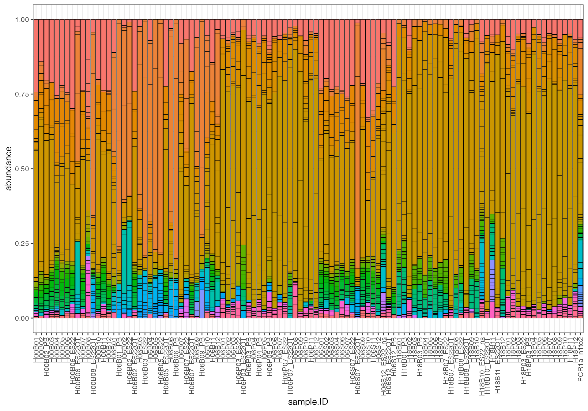
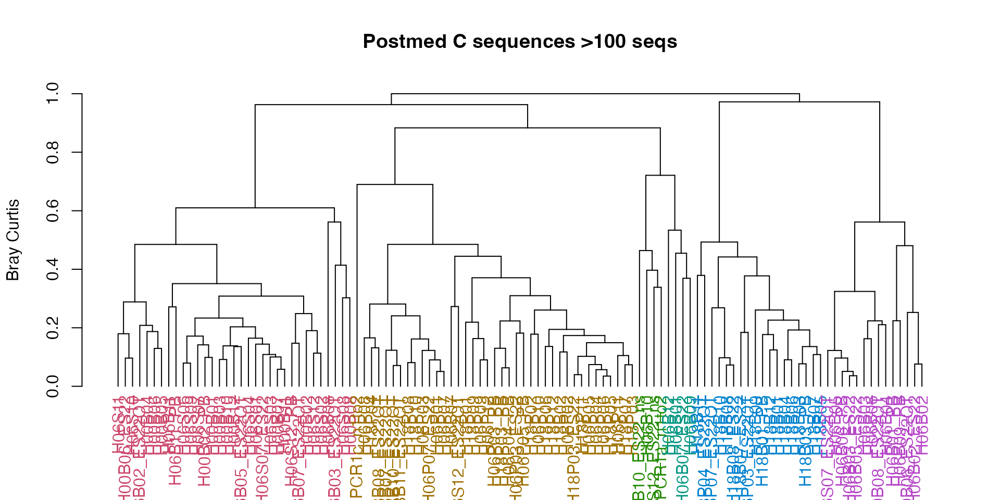
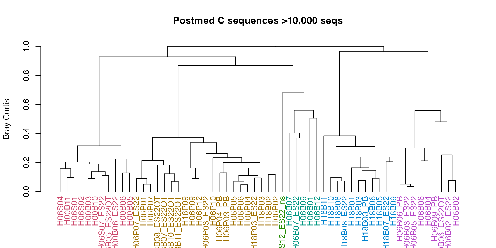

extract_seqs.Rmd
library(tidyverse)
library(ggplot2)
library(devtools)
#install("/Users/rof011/symportalfunctions")
library(symportalfunctions)
extract_seqs <- function(folder, type = "relative", clade = LETTERS[1:10], cutoff=1000, silent=TRUE) {
file_list <- list.files(path = folder, pattern = "seqs.absolute.abund_and_meta.txt", include.dirs = TRUE, recursive = TRUE)
absolute <- read.delim(paste0(folder, "/", file_list)) %>%
dplyr::select(sample_name, 40:ncol(.)) %>% # select just the symbiodinium columns
tibble::column_to_rownames("sample_name") %>% # sample_name column to rowname
dplyr::slice(-n()) %>% # remove the last row, summary data
dplyr::filter(rowSums(select(., where(is.numeric))) > as.numeric(cutoff)) %>% # remove samples where <1000 sequences
dplyr::select(dplyr::matches(clade, ignore.case = FALSE)) %>% # keep only columns matching "clade"
dplyr::filter(rowSums(dplyr::select(., dplyr::where(is.numeric))) != 0) %>% # drop zero sum rows
dplyr::select(dplyr::where(~ sum(. != 0) > 0)) %>% # drop zero sum columns
dplyr::select(dplyr::where(~ any(!is.na(.)))) # drop blank columns
excluded_samples <- read.delim(paste0(folder, "/", file_list)) %>%
dplyr::select(sample_name, 40:ncol(.)) %>% # select just the symbiodinium columns
tibble::column_to_rownames("sample_name") %>% # sample_name column to rowname
dplyr::slice(-n()) %>% # remove the last row, summary data
dplyr::select(dplyr::matches(clade, ignore.case = FALSE)) %>% # keep only columns matching "clade"
dplyr::filter(rowSums(select(., where(is.numeric))) < as.numeric(cutoff)) # remove samples where <1000 sequences
if (silent==FALSE){
cat("Excluded samples \n")
cat(paste(unique(rownames(excluded_samples)), collapse="\n"), "\n")
}
relative <- read.delim(paste0(folder, "/", file_list)) %>%
dplyr::select(sample_name, 40:ncol(.)) %>% # select just the symbiodinium columns
tibble::column_to_rownames("sample_name") %>% # sample_name column to rowname
dplyr::slice(-n()) %>% # remove the last row, summary data
dplyr::filter(rowSums(select(., where(is.numeric))) > as.numeric(cutoff)) %>% # remove samples where <1000 sequences
dplyr::select(dplyr::matches(clade, ignore.case = FALSE)) %>% # keep only columns matching "clade"
dplyr::filter(rowSums(dplyr::select(., dplyr::where(is.numeric))) != 0) %>% # drop zero sum rows
dplyr::select(dplyr::where(~ sum(. != 0) > 0)) %>% # drop zero sum columns
dplyr::select(dplyr::where(~ any(!is.na(.)))) %>% # drop blank columns
dplyr::mutate(row_sum = rowSums(select(., dplyr::where(is.numeric)))) %>%
dplyr::mutate(across(dplyr::where(is.numeric), ~ . / row_sum)) %>%
dplyr::select(-row_sum)
if (type == "absolute") {
return(absolute)
} else if (type == "relative") {
return(relative)
}
}Extracts sequences from
“seqs.absolute.abund_and_meta.txt” in the
post_med_seqs folder.
extract_seqs(folder= "20220919T102058_esampayo", type="absolute", clade="C")
folder = name of the main
folder for symportaltype = “absolute” or “relative” abundanceclade = vector of clade types to keep, can be single,
e.g. clade=“C”, or multiple e.g. clade=c(“C”, “D”)seqs = cutoff threshold to remove samples,
1000 by defaultsilent = either TRUE or
FALSE, show which samples were removed by nameNote: the folder name should be only the base
folder. For example, the folder for the following location:
"20220919T102058_esampayo/post_med_seqs/224_20220926T061917_DBV_20220926T133809.seqs.absolute.abund_and_meta.txt"
Should be:
folder="20220919T102058_esampayo", and the function will
locate the correct txt file
("...seqs.absolute.abund_and_meta.txt") automatically from
there.
tmp <- extract_seqs(folder="/Users/rof011/symbiodinium/20220919T102058_esampayo", type="absolute")
tmp[1:5,1:10] # show first 5 cols, 10 rows
#> A3 X2777800_A X2777807_A X2355146_A X2777790_A X779485_A
#> H18B10_ES22OT 0 0 0 0 0 0
#> H18B11_ES22OT 0 0 0 0 0 0
#> H18P07 0 0 0 0 0 0
#> H18P04 0 0 0 0 0 0
#> H06P09 0 0 0 0 0 0
#> X2777802_A X2777801_A C8 C78c
#> H18B10_ES22OT 0 0 8917 0
#> H18B11_ES22OT 0 0 18769 0
#> H18P07 0 0 3084 0
#> H18P04 0 0 690 0
#> H06P09 0 0 7693 0
#symportalfolder="/Users/rof011/symbiodinium/20220919T102058_esampayo"
tmp <- extract_seqs("/Users/rof011/symbiodinium/20220919T102058_esampayo", type="absolute", clade=c("C", "D"))
tmp[1:5,1:10] # show first 5 cols, 10 rows
#> C8 C78c C1 C79 C8a C35.3 C35.1 C42.2 C54l C3lk
#> H18B10_ES22OT 8917 0 941 0 4890 0 0 759 0 0
#> H18B11_ES22OT 18769 0 1834 0 8966 0 0 940 0 0
#> H18P07 3084 0 301 0 1347 0 0 335 0 37
#> H18P04 690 0 33 0 243 0 0 29 0 0
#> H06P09 7693 0 1168 0 6915 0 0 643 0 0
tmp <- extract_seqs("/Users/rof011/symbiodinium/20220919T102058_esampayo", type="relative", clade="C")
round(tmp[1:5,1:10],3) # show first 5 cols, 10 rows, round to 3 decimal places
#> C8 C78c C1 C79 C8a C35.3 C35.1 C42.2 C54l C3lk
#> H18B10_ES22OT 0.514 0 0.054 0 0.282 0 0 0.044 0 0.000
#> H18B11_ES22OT 0.529 0 0.052 0 0.253 0 0 0.027 0 0.000
#> H18P07 0.481 0 0.047 0 0.210 0 0 0.052 0 0.006
#> H18P04 0.555 0 0.027 0 0.195 0 0 0.023 0 0.000
#> H06P09 0.365 0 0.055 0 0.328 0 0 0.030 0 0.000The cutoff threshold by default is 1000 seqs, changing it here manually will lower this threshold to 100 seqs
tmp <- extract_seqs(folder="/Users/rof011/symbiodinium/20220919T102058_esampayo", type="relative", clade="C", cutoff=100)
round(tmp[1:5,1:10],3) # show first 5 cols, 10 rows, round to 3 decimal places
#> C8 C78c C1 C79 C8a C35.3 C35.1 C42.2 C54l C3lk
#> H18B10_ES22OT 0.514 0 0.054 0 0.282 0 0 0.044 0 0.000
#> H18B11_ES22OT 0.529 0 0.052 0 0.253 0 0 0.027 0 0.000
#> H18P07 0.481 0 0.047 0 0.210 0 0 0.052 0 0.006
#> H18P04 0.555 0 0.027 0 0.195 0 0 0.023 0 0.000
#> H06P09 0.365 0 0.055 0 0.328 0 0 0.030 0 0.000The default setting is silent=TRUE, set to
FALSE to print removed sample names below the cutoff
tmp <- extract_seqs(folder="/Users/rof011/symbiodinium/20220919T102058_esampayo", type="relative", clade="C", cutoff=100, silent=FALSE)
#> Excluded samples
#> - PCR1c_n2
#> - H18P03_ES22OT
#> - H18B11_ES22
#> - H00B08_ES22
#> - H18P04_ES22
#> - H18P06_PB
#> - PCR1a_n2
#> - H06S05
round(tmp[1:5,1:10],3) # show first 5 cols, 10 rows, round to 3 decimal places
#> C8 C78c C1 C79 C8a C35.3 C35.1 C42.2 C54l C3lk
#> H18B10_ES22OT 0.514 0 0.054 0 0.282 0 0 0.044 0 0.000
#> H18B11_ES22OT 0.529 0 0.052 0 0.253 0 0 0.027 0 0.000
#> H18P07 0.481 0 0.047 0 0.210 0 0 0.052 0 0.006
#> H18P04 0.555 0 0.027 0 0.195 0 0 0.023 0 0.000
#> H06P09 0.365 0 0.055 0 0.328 0 0 0.030 0 0.000To extract in a long format (like pivot-longer), use
extract_seqs_long. It’s identical to
extract_seqs, just returns in a long rather than wide
format.
# extract seqs
plot_data <- extract_seqs_long(folder="/Users/rof011/symbiodinium/20220919T102058_esampayo", type="relative", clade="C")
ggplot() + theme_bw() +
geom_bar(data=plot_data, aes(x = sample.ID, y = abundance, fill = seq.ID), color="black",
linewidth=0.2, stat = "identity", show.legend=FALSE) +
theme(axis.text.x = element_text(angle = 90, vjust = 0.5, hjust=1))
Second example: use extract_seqs with vegan to get
dendrogram and clusters.
cluster.C <- extract_seqs(folder="/Users/rof011/symbiodinium/20220919T102058_esampayo", type="relative", clade="C", cutoff=100)
library(vegan)
#> Loading required package: permute
#>
#> Attaching package: 'permute'
#> The following object is masked from 'package:devtools':
#>
#> check
#> Loading required package: lattice
#> This is vegan 2.6-4
library(tibble)
cluster.C.dist <- vegdist(cluster.C, method ="bray")
cluster.C.km <- cascadeKM(cluster.C.dist, 1, 10, iter = 5000)
cluster.C.km.grps <- as.data.frame(cluster.C.km[["partition"]]) %>%
rownames_to_column(var="sample.ID")
library(dendextend)
#> Registered S3 method overwritten by 'dendextend':
#> method from
#> rev.hclust vegan
#>
#> ---------------------
#> Welcome to dendextend version 1.17.1
#> Type citation('dendextend') for how to cite the package.
#>
#> Type browseVignettes(package = 'dendextend') for the package vignette.
#> The github page is: https://github.com/talgalili/dendextend/
#>
#> Suggestions and bug-reports can be submitted at: https://github.com/talgalili/dendextend/issues
#> You may ask questions at stackoverflow, use the r and dendextend tags:
#> https://stackoverflow.com/questions/tagged/dendextend
#>
#> To suppress this message use: suppressPackageStartupMessages(library(dendextend))
#> ---------------------
#>
#> Attaching package: 'dendextend'
#> The following object is masked from 'package:permute':
#>
#> shuffle
#> The following object is masked from 'package:stats':
#>
#> cutree
cluster.C.km.grps <- as.data.frame(cluster.C.km[["partition"]]) %>%
rownames_to_column(var="sample.ID")
cluster.C.dend <- as.dendrogram(hclust(cluster.C.dist, method = "complete")) %>% color_labels(., k = 6)
plot(cluster.C.dend, main="Postmed C sequences >100 seqs", ylab="Bray Curtis")
Now tune the noise with cutoff:
cluster.C <- extract_seqs(folder="/Users/rof011/symbiodinium/20220919T102058_esampayo", type="relative", clade="C", cutoff=10000)
cluster.C.dist <- vegdist(cluster.C, method ="bray")
cluster.C.km <- cascadeKM(cluster.C.dist, 1, 10, iter = 5000)
cluster.C.km.grps <- as.data.frame(cluster.C.km[["partition"]]) %>%
rownames_to_column(var="sample.ID")
cluster.C.dend <- as.dendrogram(hclust(cluster.C.dist, method = "complete")) %>% color_labels(., k = 6)
plot(cluster.C.dend, main="Postmed C sequences >10,000 seqs", ylab="Bray Curtis")